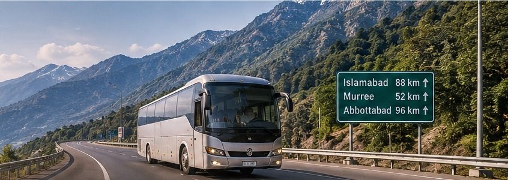

01
LahoreIslamabadLEG 1 · MOTORWAY ROUTE
ROAD DISTANCEApprox. 375 km
ESTIMATED DRIVEApprox. 4–5 hrs
BUSCompare options
Plan trips across multiple cities, compare buses, flights and private cars, and understand your estimated travel costs before you go.

This is an illustrative route preview. Actual route details and estimates will be generated from the locations entered by the user.
Musafir breaks a multi-city trip into smaller travel legs. Each leg gets its own distance, duration and transport comparison, followed by one combined journey summary.
Compare estimated cost and journey duration for each route segment. Availability and final fares must always be confirmed with the operator.
Review estimated bus fares and travel durations for routes where operator information is available.
Compare indicative flight costs and air-travel duration between relevant city or airport pairs.
Estimate driving distance, journey time and fuel-related costs for a private vehicle.
Musafir separates route calculations from fare estimates. Distances and road durations come from routing data. Costs are calculated using configurable rules, not presented as live operator quotes.
Road distance
The routing service returns a road route and its distance between the selected locations.
Travel duration
The route service provides an estimated driving duration. Actual time can vary with traffic, weather and road conditions.
Estimated fare
A configurable rule uses a base amount plus a distance-based rate. Private-car fuel estimates can use distance, fuel efficiency and a fuel-price input.
Example only. Fuel price, vehicle efficiency, tolls and other charges can change. This is not a live quote.
Explore relevant travel operators, accommodation and local transport information for the cities on your itinerary. Musafir helps you find sources; it does not make bookings.
Find accommodation options near your selected destination and follow external links to check details.
Accommodation information ↗Access relevant bus and transport provider information, including official websites where available.
Operator information ↗Explore local travel services that may help you move around after reaching a city.
Local travel information ↗Bring your stops, transport choices and estimated costs together with Musafir.